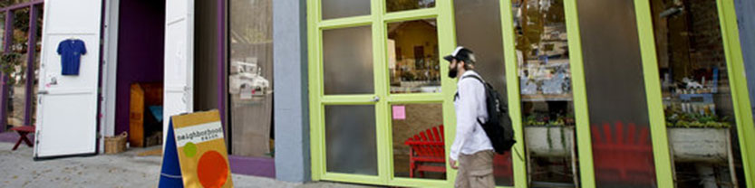
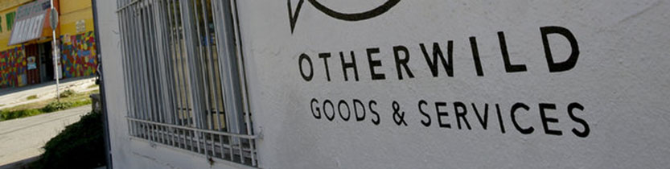

Los Angeles Times | February 1, 2014
Like the Echo Park Lake that reopened last June, the neighborhood surrounding Echo Park Avenue has experienced a sense of renewal with the addition of several new retail stores... Read the full article

Los Angeles Times | January 22, 2014
The stretch of Echo Park Avenue north of Sunset Boulevard is known for its close proximity to Dodger Stadium, but lately it has seen an eclectic mix of stores and restaurants open... Read the full article
Time Out LA | November 20, 2013
Here in LA, "shop local" doesn't just mean buying your fruits and veggies at the farmers market. Meet 13 Angeleno artisans who are making and selling beautiful... Read the full article